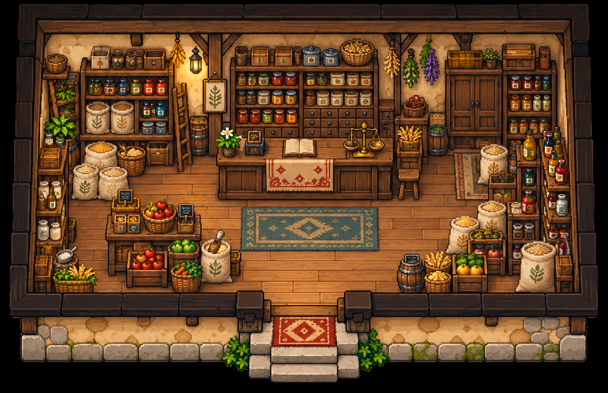

Armazém do Augusto — objetos novos
31 peças criadas do zero, em PNG independente. Parede na mesma cor da ferraria e seis novos móveis para o armazém.
Arraste as peças para conferir a composição. A seleção acompanha os acessórios apoiados no balcão ou na mesa.
O piso reaproveita o material da ferraria. As paredes são apenas um guia de composição. A fachada original está preservada.
O xadrez mostra a transparência real. Os arquivos originais mantêm resolução, detalhes e pixels gerados.

Referência preservada sem edição. Nenhum objeto foi recortado desta imagem.